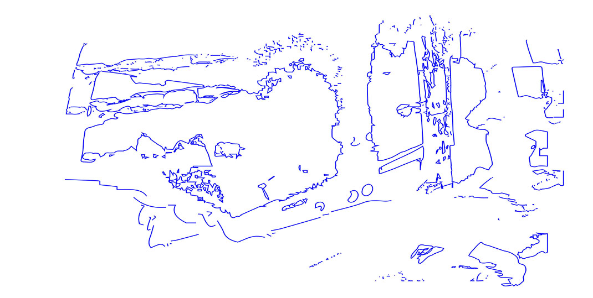
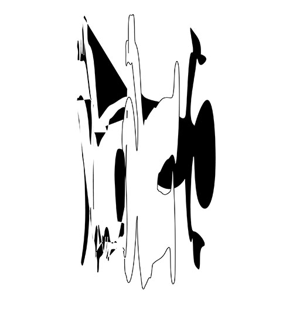

AUTOMATION; [APPLICATION];
Besan Khamis + Rahul Subhash Shinde

BESAN + KIMI TALK ABOUT:
PALESTINE & PRINTING FREEDOM
Kimi Hanauer: What are a few things you say 100% yes to?
Besan Khamis: Colors, Black power, and 110% YES to rolled grape leaves.
KH: Amazing. I saw you using this phrase online, so I wanted to ask, what is your vision of an artistic Palestinian intifada?
BK: I think, first of all, this is just inherent to resistance: everyone says 100% NO to occupation. Not everyone is an artist, but everyone under occupation is creative in some way. So an artistic intifada demands change through being creative and embraces art as a medium for change. I think art can be used as a representation for people’s own infinite possibility as humans. Over there, people have accepted that art can be therapeutic, but I think people need to embrace art as something that’s more than that, something that’s valuable in and of itself. I believe in resistance on all fronts, but I do want to push art as another viable resistance medium.
BIRD'S EYE VIEW
iteration 6
RAHUL TALKS ABOUT:
GRAPHIC DESIGN, IDENTITY, AND DIGITAL SPACE
°Introduction°
I was approached by Besan Khamis late in November 2015 to participate in this publication. Prior to this project, conversations and debates about the Palestinian fight for independence with both Besan and his family brought to light the necessity of my practice to start becoming more politically and socially conscious. It became clear to me, that the way in which I achieved a certain level of self definition, has come from a deeply rooted concern for ethics and its application. As I move into a working space that exists in relation to larger systems of power, it is becoming more important to shape my practice in relation to this concern and its implication on my own state of being.
I’m a first generation American, the son of parents who both came from India to pursue higher education. My father was the first and only member of his family to leave the country at the time. Because of this, I’ve always felt the necessity to be very careful in what I say and who I say it to. Our position, both socially and politically, after my parents were settled in America, was seen as something very fragile, or at least, that is the impression that I have been left with. As a result, my work has taken a primary interest in formal experimentation. This is a place of safety for me, rules broken in the realm of the abstract (imagery) have no bearing on what we define as concrete, what we see doesn’t necessarily have to corelate to what we experience and behind this mask is where I take shelter.
Images included in this project were generated with the help of a computer program I wrote early on in the project. The program, titled “Image Outliner,” is a small image editor written in a programming language called Python, and was originally meant to replace my reliance on illustrator’s live trace function. The script also allows batch editing and conversion which greatly expedites my production process. Image Outliner takes an inputted image(s) (fig. 1) and retrieves the RGB value of each pixel that makes up the image. When the script first starts, it asks the user to set a range of values (a number between 0-255) for the program to check for. If the pixel matches the user-defined parameters it changes the pixel to black, otherwise it sets the pixel value to white (fig. 2). The script then loops through each pixel of the newly generated image (fig. 2) to see if they are black and, if they are, checks to see if they have a white pixel adjacent to them (which would indicate that this pixel is an edge pixel). If the pixel meets the aforementioned parameters, It is kept black, if not, the pixel is changed to white (fig 3.)

fig 1.

fig 2.

fig 3.
The content below borrows its form, loosely, from that of a play, or physical performance, with sections subdivided into different “acts.” All of the writing was initially generated over a one week period while I was living at my parents house in Albuquerque, New Mexico. The writing was developed alongside intermittent conversations over facetime with Besan that would usually be in response to, or later inform, the writing from the previous or for the next day. The text as it exists now feels as if it begins and ends in transition, ideas were loosely pursued and expanded upon based on impulse. Even now, writing this introduction, I find there to be many problems in my logic (many gaps in its transcription as well), coming from either ignorance and/or arrogance. However, I do feel comfortable leaving this as a document to record and archive my thoughts on the subject at this point in time.


KH: So what do you think is the importance of metaphor and imagination within the conflict? Is it important at all?
BK: Yeah, it totally is. I think that symbols and metaphor are omnipresent in that land… like walls, guns, keys, the kufiyya, birds… they all enter in and out of the land of metaphor and reality. Walls exist in real life but then they are used in metaphor interchangeably. And then symbols are everywhere. They also get misused and mistreated. For example, if an Israeli flag, with a Star of David, is fluttering attached to a bulldozer that crushes your house, that’s a messed up use of symbols. Symbols are everywhere and they are used and misused all the time.
KH: Is there a productive way of using metaphor and symbol?
BK: They both sustain lives and sustain people’s imagination and, of course, imagination is crucial, because I think it’s the imagination of the colonized and occupied people that really keeps them living against all odds. It allows the people to question; what if there was no watchtower? What happens if I do get justice? How do I get around this checkpoint? What if co-existence? That’s all imagination. It’s all crucial.
BIRD'S EYE VIEW (detail)
iteration 6
KH: Metaphor, symbols and imagination are also tools that artists use—how do you think artists can play a significant role in the conflict or social movements in general?
BK: There’s tragic and inspiring art language, like poetry from Mahmoud Darwish and puns and jokes. Everyone tells jokes and plays with tongue twisters. Lots of rappers now are just messing with the words of occupation and daily life. That’s what I think art is; those jokes and tongue twisters. The role of the artists is to tell our old stories in new ways so they don’t get stagnant. To reuse symbols and not let them become stagnant. Posing questions and just making things that are inspiring. I don’t think it’s the artist’s role to answer the questions, people put all that pressure on artists, like what’s the solution, what do you propose? I think artists need to be aligned with a left-wing progressive political movement.

It’s the imagination of the colonized and occupied people that really keeps them living against all odds.
KH: It’s really easy to get stuck in the impossibilities of reality—imagination can be a useful tool when you decide not to accept the situation as it is and decide to work for something better.
BK: It’s also our role to be positive, but always just keep poking and being playful no matter what our situation is.
°Act 1: Definitions°
Establishing a theoretical framework and language for the documentation of exploratory research work.
(primary definitions taken from dictionary.com)
Abstraction: Freedom from representational qualities in art and the quality of dealing with ideas rather than events.
OR the absence of comprehension in relation to what we perceive as concrete.
Ahistorical: Lacking historical perspective or context.
OR to work ahistorically may refer to the desire to work in ignorance of the linearity of production, influence, and ideas conception, etc.
Assimilation: The process by which a person or persons acquire the social and psychological characteristics of a group.
OR perhaps better described through the metaphor of the physical theater. Assimilation is the process of constructing a costume or mask to be worn by the actor.
Automation: The use of a device or process working by itself, with little or no direct human control, in a system of manufacturing or other production process.
OR in this case, automation implies a type of independence.
Convenience: The state of being able to proceed with something with little effort or difficulty.
OR a crutch, without thought, what do we define now as inconvenient?
Community: A feeling of fellowship with others, as a result of sharing common attitudes, interests, and goals.
OR foundations, our tie to a physical reality, self definition through a network of relationships.
Democracy: Control of an organization or group by the majority of its members.
OR what we ultimately have to share, a projection of, what should ideally be, our collective will, marked by a sensitivity and sense of responsibility towards the individual.
Family: A person or people related to one and so to be treated with a special loyalty or intimacy.
OR a starting point, conception in relation to ideology, values, ethics.
Freedom: The power or right to act, speak, or think as one wants without hindrance or restraint.
OR simply replaced with the word, autonomy or independence.
Reality: The world or the state of things as they actually exist, as opposed to an idealistic or notional idea of them.
OR reality, when modified by digital or physical, differentiates between digital spaces (the internet, screen based media, etc.) and physical spaces (spaces in which our physical presence).
Think: To have a particular opinion of.
OR in this context, an expression of doubt (e.g. I think that...), a means to place and acknowledge the limitations of the author.
ASSUMPTIONS (Automation):
· In application: (1) The process of automation can be applied to the manipulation of data in digital space. And, (2) the process of automation can be applied through the introduction of robotic/mechanized hardware to create some sort of change in physical space.
· There is a necessity for automation in the pursuit of symbolic abstraction. We need to reclaim symbolic space from commodification. Our visual language is a form of social currency, a small reflection of our capacity for self-determination i.e. do we have control over what we see while in public space? There is a necessity for the of democratization of visual space.
· A mark’s significance can become apparent if it is able to be quantified or replicated i.e. computers construct images through purely numerical data. Each image is composed of a matrix of data points storing color values for each pixel that makes up the final image. Numerical abstraction presupposes a more concrete end, given that concept is being abstracted to numerical quantities that have more concrete physical representations vs. just keeping an idea in a purely theoretical space.
· The process of automation inherently aids in the speed of production. One of the main advantages of working in a digital space is the ability to automate repeatable actions. While I do believe the human hand, thought, or expression can never be truly replicated, it’s important to question the limits of our capacity for production.
· The process of automation comes with the possibility of reproduction and iteration. To distill an idea down to a logical series of instructions gives a process the ability to be reproduced by individuals outside the initial production phase: the sharing of an idea will potentially be more clear.
· Dynamic (or responsive) automation allows for the artist to become cognizant of the relationship that she/he has with the medium, implying that the practice of art making is a two (or more) sided conversation between what is being made and the maker. This relationship contains many metaphorical qualities that may be exploited given the specific intentions of the artist.
Abstraction/Freedom... The Reach
(Besan Khamis)
1. Shift: Shift reality slightly, into a realm of metaphor and the impossible.
2. *A fragile opening: This shift to the imaginary leaves a fragile opening between reality and fantasy.
3. Reach: reach inside, grasp freedom.
*The Fragile Opening (Existing in the Eyelash Moment)
Eyes open: With eyes open we can take what we see around us to be our concrete reality, however absurd our reality may be.
Eyes closed: Strands of light + color, faces + figures float past. Our surreal--or at least the surface of our surreal.
Blink: Eyelash Moment.
When we blink, for an instant, the concrete reality is obfuscated. But our eyes are not closed. Our eyelashes collide and create a haze, wherein those phosphenes of light, color, form (free shapes) are infused with the forms of our daily life. Reality is refreshed.
It is not possible to freeze this moment, but perhaps to exist creatively in it
[If I ruled the world].


KH: Yeah, that’s really one of the tasks of this project; envisioning something that critiques by way of being positive.
BK: There’s this book called the “The Secret Life of Saeed: The Pessoptimist,” written by Emile Habibi. Habibi uses humor and satire to skewer the Israeli occupation and pry apart it’s absurdity. I see myself as a pessoptimist... Palestinians are pretty hopeless. We are pretty hopeless about the world. Shit’s been wrong for 70 years and for 70 years we’ve known the lie of progress. And we have seen no change. But at the same time, we are able to be satirical and creative with what we’ve been given and I think that’s how a lot of artists are too.
KH: You’ve talked to me a bit about being dedicated to ‘the peasant.’ What do you mean by that?
BK: I mean that my art-making is rooted in a particular history. I come from hard-working farming people, even on my U.S. side—my mother’s father comes from a farming family in Nebraska. That is my heritage and I don’t intend to leave that behind. I’m not in the art world to mingle with the bougie crowd. I haven’t fully figured out how to do those fellahi roots justice through art, so I just can say that everything I do is dedicated to them and I’m thinking about them.
A peasant—I guess that just means, brown person trying to survive… white person trying to survive… everywhere, all over. I think about Hispanic men and women selling flowers on Northern Parkway. I think about my grandmother who lived a humble life and raised seven children and that was her life.
KH: What makes you feel free? Can you tell me more about the Freedom Printer?
BK: I think just me being in motion, and moving. And I’m lucky to be able to move freely as a Palestinian. When we say “free Palestine,” a significant portion of that freedom we are talking about is just movement. Being able to move from the town to the city just to work. When you ask a lot of Palestinians how they are affected by the occupation, they will say they just can’t move, they live in tiny confined spaces, they can’t leave.
Also, just making things makes me feel free. Making art. Because I can imagine anything I want to do, and just make it real, and it is real…
Like the Freedom Printer, for example, it’s a printer that I painted with the Kufiyya pattern and called it a Freedom Printer. A printer, you just send it a file. And if it’s a good printer, it makes your file a reality. If we say we are printing our freedom, and it’s happening now, then that’s what’s happening.
°Act 2: Initial Responses°
Initial responses, anxieties and misunderstanding, only through anonymity can I become truly vulnerable.
01.10.16
If I ruled the world? Maybe I have a hard time answering this question because I’m not familiar enough with myself, let alone the world that I am currently living in. It seems as though everything moves too quickly to string together logical relationships between the events and images that I am constantly exposed to. I’ve recently noticed, within my own practice, that I’ve been attempting to look at the world a-historically (or at least that is how I’ve become comfortable talking about my practice). Being a graphic designer, my work is primarily interested in the creation of form: design is applied in the service of content. An older idea (which is still taught today) suggests that the designer must be invisible, a crystal goblet, “what must the content do?” In this way, storytelling becomes the perfect metaphor for the purpose of graphic design, or, perhaps, it is better described as “the art of storytelling in the absence of a story,” (our content becomes design itself). Perhaps an a-historical approach is meant to be a parallel for the rejection of content and the elevation of the viewer (individual / collective). Or maybe, to be more specific, a-history, the absence of time, isolates content in a way that makes it more conducive to form building.
In the absence of identity:
Not to be interpreted as: I have no identity, but instead: I only think that my current perspective is primarily defined through things that I have been exposed to externally.
(maybe the definition of assimilation is closer to what I’m looking for).
I have caught myself searching for where my home could be. As if, the color of my skin, my parents’ country of origin, should affect my character.
Ethnically Indian,
Indian man,
Indian American,
American boy.

This is a list of things that worry me:
· It worries me that issues of conflict involve two sides who define the middle in different places.
· It worries me that I am unable to take concrete stances on political/and social issues (publicly).
· It worries me that I am sometimes able to justify violence in my mind but posture as a pacifist. I don’t know if I feel comfortable elaborating on this any further.
· I have always thought of my work as a means of escaping contemporary realities. Is art inherently defined and justified historically? Is that even relevant anymore? It seems like context supersedes an artist’s intention. Perhaps this has left me more confused than anything.
· I’m worried that my ideas, what I think is right, is informed in part by the privilege that I benefit from. In a way, I’m scared that my ideas come from ignorance.

What does compromise look like?


KH: Isn’t it kind of a futile object? The object itself is a metaphor, that’s printing more and more metaphors…
BK: The reason I’m painting it, is because I want to reawaken our symbols and reuse them. It’s just a printer painted, it’s a mundane printer-object, but everyone has to say 100% NO to occupation. Resistance should be everywhere. It should be in every object we use, the telephone, everything. They should all be resistant. All Palestinian objects should be in resistance to being occupied. It’s also a metaphor for us, for Palestinians, demanding our freedom now. We are going to get rid of this occupation. We’re going to print it out, no matter what.

Everyone has to say 100% no to occupation. Resistance should be everywhere. It should be in every object we use, the telephone, everything.
KH: So what is your positive vision for Palestine?
BK: My positive vision, is my only vision: Jews and Arabs living in that land under total equality. And it should be secular. Like Malcom X always said, religion should stay at home.
KH: Do you think a resolution is actually possible?
BK: I mean, I think it’s the only thing that is realistic at all, I think a two-state solution is impossible, it would just prolong. I think it is possible. We can make it realistic, it’s what young Jews and Arabs can make happen. It’s the only possibility, one state, all of us together, Palestinian refugees come home. It’s my most positive vision.
KH: Israel is an example of the failure of nations. The whole concept of nations in general is just not fitting for the Middle East.
BK: That’s a huge reason the Arab world is in shambles; because Europe came tore it all up with arbitrary borders that pitted ethnicities against each other. But the whole world is made of nations at this point, so I don’t know how else we could think about it.
BIRD'S EYE VIEW (detail)
iteration 6
KH: What do you think happens when such intense violence is the norm?
BK: Well, you get kids with Post Traumatic Stress Disorder (PTSD), kids who are amputees, kids who only know violence their whole lives. They think it’s the only way because it’s all they know. You get people who are completely hopeless. When you are brutalized all your life, it becomes easy to just end your life and take another one’s with you. When you are surrounded by violence you can become violence.
KH: It just breeds hate.
BK: Yeah, but like I said, I am a by-any-means-necessary kind of guy. I don’t necessarily condemn the violence of people who live under occupation, but I just don’t think it’s the only way, and I don’t think people need to be killing themselves. That’s why I think art needs to be taken seriously. I do think it gives hope and is a viable form of resistance. We kind of have to make a spectacle of ourselves for the west in order to gain sympathy. And that’s a way to do that, by making art—it’s a very viable resistance.
KH: There is a lot of room for something like that, whereas violence just keeps repeating itself.
BK: But that’s not to say that people haven’t been resisting nonviolently for years, but the news just doesn’t put that out there. There could be a hundred non-violent Palestinian protests in one week and people don’t broadcast that. They only broadcast explosions.

When you are surrounded by violence you can become violence.
KH: Yeah. That’s another thing we can talk about, how language works to frames the conflict?
BK: Language is everywhere and it’s how we understand the world, what we know is what we hear and say.
KH: And it’s how we come to understand ourselves.
BK: Language cleans everything up. It makes the occupation “ok” because Palestinians are “militants, backwards-minded terrorists” who are “hate-filled” and violent for no reason. And Israelis are “soldiers” and bridge the gap between the west and the orient, and there’s this Orientalist language that makes Arabs backwards and Israelis modern and they can be related to. So it’s ok to bomb Palestinians.
And then there’s other blatant racist language just in Israeli government. You probably heard when Netanayhu said something like ‘we have to put up a wall to keep out the wild beasts.’
°Act 3: Landscapes°
Defining contemporary landscapes, internal, and external.
01.12.16
Established (or pre-existing?) media come with inherent limitations. By design they are meant to serve a specific function. While there is still room for creativity and alternative use (reality television as a platform for performance art [command / control + F: "A Basement Affair"]) everything produced either exists inside of or in opposition to constraints defined by the medium. The internet provides a decent illustration of these limitations. While in theory the internet has an infinite webspace, its indiscriminate storage of information allows only for expansion not evolution. By this I mean that what we have internalized as truth on the internet will never change, it is a static relationship, all movement is lateral. However, regardless of whether or not my observation is true, there is still a large population that does not have access to this tool and, given the nature of tech-evolution, probably never will.
As a point of focus: I’ve always been very critical of the profession that I have chosen to become a part of. Graphic design, as it has existed/thrived in America, has primarily been produced in service of larger corporations which obviously come with private interests. While I don’t think it is fair for me to completely denounce the private sector, given that this is probably where most of my paychecks will / have came from and the fact that it contains a lot of the start-ups and small businesses that I really admire, I do think that it is important to question why / what / how we are normalizing visually through advertising (better described as the visual promotion of private interests).


A while ago (2 years) I wrote that I thought design had become stagnant. I thought at the time that graphic designers should stand autonomously, as external commentators providing visual critique in a vein similar to what you see from groups like Metahaven or Art in Ruins. But now I feel as if this (my interpretation of these methods) is a passive approach to the issue, that in pursuit of these models, I am not seeking evolution but instead an escape. There is no responsibility in the realm of the theoretical, there is only concept, which, in most cases, is devoid of content. I was seeking the safety of academia while ignoring the inherent relationship that I have to capital interest.


Is it naive for me to think that people will react positively to sincerity? Is it possible to make the consumption of applicable information easy? I take so much of the shit fed to me for granted. I haven’t read the latest apple terms and conditions. I’ve stopped looking for information on the drugs I’m taking. All I do is consume. My own habits have become (always were) antithetical to what I believe in.
01.13.16
I think it’s easy to tie digital media to overconsumption purely though its speed and accessibility. I don’t think it’s fair to place a value-judgement on this fact, but perhaps it would be good to acknowledge that we are constantly being exposed to content that is advertised (or promoted). I think, of the hundreds of articles from Facebook that I consume during the week, at least 90% (this is a hyperbole) of the content that I accessed from my iPhone was “sponsored.” Why are we slowly losing control of what we are exposed to?

For example, the other 10% (continuation of above hyperbole) of my feed is comprised of opinions backed by sources that I have trouble verifying. I’ve lost sight of the individual, the physical counterpart, the body connected to these opinions. Now I don’t think this is necessarily a bad thing. The internet is and has been the future of the way we organize together as communities, share ideas as individuals, and celebrate our capacity for creation and collaboration, regardless of what defines us physically. This distinction is what has always fueled my interest in establishing and exploring the connections between digital and physical realities. What are we capable of when we translate our thoughts into the logic of pure data? What levels of expression will we soon be able to access?
But with this idealism, I still see so much frustration. The anonymity of the internet leaves the individual vulnerable. At the end of the day, interaction with the screen is one-dimensional. We exist in isolation; our access points are separated by time and space: where does empathy exist in this relationship?

I don’t think the issue is with the content itself - it seems to move too quickly to have any effect except for maybe to validate a set of externally constructed beliefs. But maybe it is important to activate and engage the individual. This person is consuming information on their own. I assume that the internet is kind of like a disembodied mob. To isolate that individual, to really speak to them on a personal level, I like to imagine that this would yield something that is both positive and productive.



KH: It’s disgusting that it’s not even shocking anymore. Do you have any thoughts on how language then frames how we understand ourselves?
BK: I’m no psychoanalytic expert, but, I think for example, Arabs can even live up to Orientalist representations of Arabs. When you’re told that’s how you are and the only representation that you see of yourself is that on TV, then you learn to identify with a certain image and idea of how you should be.
BIRD'S EYE VIEW
iteration 6
KH: As a Baltimorean-Palestinian, do you feel there is a relationship between the struggles both Baltimore and Palestine face?
BK: There totally is. They’re obviously not the same struggles, but we can recognize similarities between each other and find solidarity. I say this phrase, “the hood is occupied.” I consider the police presence and the surveillance as an occupation in Baltimore. I think it’s equally brutal. I see neighborhoods devastated here, some looking in worse shape than in Palestinian refugee camps in the West Bank. And then the racial inequality here is so blatant and the rich/poor divides, so real and abrupt, there might as well be 30 foot tall walls here like in Palestine. There’s refugee problem here too – people getting kicked out of their homes. Those are refugee problem.
°Act 4: Future Spaces°
(hypothetical)
01.14.16
Many physical mediums inherently reduce the amount of senses activated, such as photography which both eliminates our binocular vision and leaves our sense of smell to be determined by the place in which the media is viewed (the same can be said of any of the other senses, besides sight. In a way, many modes of perception are deferred to chance simply because it is convenient). The same is true for digital realities. As of right now, we are still only capable of accessing its visual state through the screen or as projection. It is also possible to see data translated into physical action through robotics, and motion detection hardware/software is allowing for various experiments in haptic interfacing (see zero ui).
I think that this is important because there needs to be a continuous growth of positive creative spaces on the internet and emerging digital platforms. Not only that, but we must be ready to adapt to changes in technology that are integrated into disciplines outside of art / design. Inversely, we must also be in control of media evolution, defining uses for emerging technology and contributing to its creation through visual, physical, and digital experimentation. It is important to get ahead of the privatization of open distribution channels like the internet, which is slowly being monopolized into an arena for the propagation of oppressive, consumption based services. We must advocate for an open source system of sharing and documenting information. This is never going to be a call for censorship, but instead, one that emphasizes the responsibility of the individual to contribute honestly. I don’t think it is naive to think that the amount of compassionate individuals who exist can overwhelm corporate interest through sheer volume.

I’ve always imagined open source software to be something like a hardware store in which everything is sold for free. Through this method of distribution, you are not directly solving problems, but you are slowly giving the communities that you have chosen to contribute to more and more agency as they continue to develop their technical skills. Of course, parallel to this development, there must be direct action, supported by both physical and digital communities.
I think it is important for us to leave as many fully developed ideas for the next generation to easily digest and either move forward, or away from. We are at a period of transition, on the cusp of an overwhelmingly digitally aided age. I feel I have part of the responsibility to make sure this transition exists in its most accessible and honest form.

BESAN KHAMIS - b. San Francisco, 1994, is a Palestinian-American artist living in Baltimore. He has just graduated from Maryland Institute College of Art with a BFA in Interdiciplinary Sculpture. His artwork consists of paintings, sculptures, performances, and musical compositions. His recent painting exhibition, Father And Son, was displayed at the Jerusalem Fund in Washington D.C.. He is currently working on multiple musical collaborations and a series of theatrical art performances called Bird’s Eye View of the Occupation. Concerned about the treatment of his people, the Palestinians, Besan is focusing on the creation of a political artists’ movement that specifically addresses Palestinian grievances.
RAHUL SUBHASH SHINDE - b. 1994, is an Indian American graphic designer. His work has been shown locally in Baltimore and internationally in South Korea. He has participated in / initiated a series of collaborative design research projects, the latest of which (or-maybe.info) is serving as a nomadic design studio, collaborative research space, archive, and publishing platform. He has just completed his BFA in graphic design from Maryland Institute College of Art.